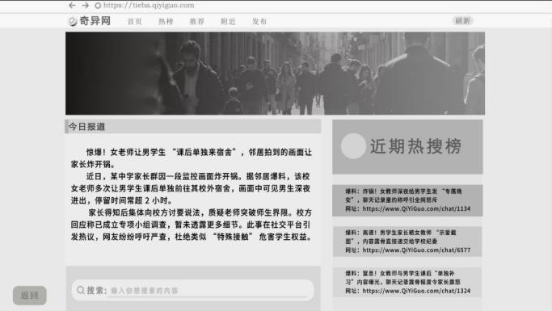
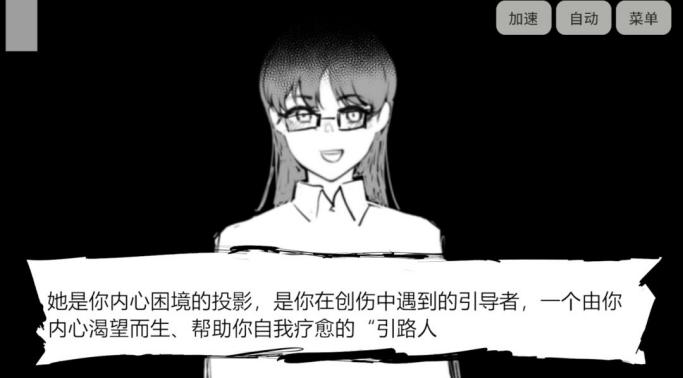
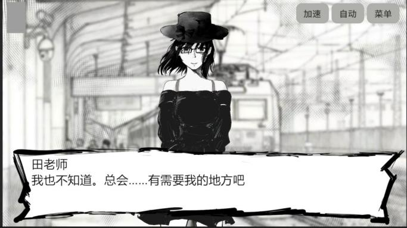

← 返回作品索引
仿真浏览器界面 / 2015 年信息现场
论坛 · 热搜 · 线索检索

游戏主界面：黑白手绘风格，开始 / 加载 / 设置 / 退出01
仿真浏览器：在「奇异网」论坛与热搜中检索线索02
剧情对话：角色立绘与手写撕纸式对话框03
叙事演出：引导者角色的心理线呈现04

01 / OVERVIEW
项目概览
一款以「后悔」为名的文字互动小说，也是一次关于盲从与真相的倒带。
故事发生在 2015 年的夏天。一则关于老师的流言在微博、贴吧与课桌间疯传。当所有人都指认「是她的错」时，「你」也点了头；直到真相逆转，我们才惊觉那个夏天共同完成了一场「完美」的犯罪。
玩家需要打开「2015 年的浏览器」，在仿真的社交网络与论坛中爬梳线索，在信息洪流中打捞被淹没的真相——这一次，你将是那个按下暂停键的人。
SEARCH
信息检索
把社交网络与论坛变成可探索的叙事现场，玩家通过搜索、浏览与比对推进调查。
REASONING
叙事推理
线索并非直接给出结论，而是要求玩家在碎片信息之间建立联系，重新判断曾经确信的事。
STYLE
黑白水墨
黑白手绘与撕纸式对话框共同构成视觉语气，让回忆、流言与心理线保持统一的压迫感。
02 / MY ROLE
我的工作 策划
- 01
核心玩法与叙事框架。参与游戏项目的策划与设计工作，负责游戏核心玩法构思、关卡设计和剧情框架搭建。
- 02
沉浸式体验方案。结合虚拟现实专业知识，提出沉浸式游戏体验的设计方案，提升游戏的趣味性和互动性。
- 03
原型与团队协作。协助团队完成游戏原型制作，运用 Unity 等引擎进行简单的场景搭建和交互逻辑实现，配合美术与技术团队推进项目进度，确保比赛作品按时提交。
03 / SCREENS
画面与界面
仿真浏览器承担「调查工具」的角色，对话与演出则负责把检索到的信息重新压回人物身上。黑白手绘、手写撕纸对话框与心理线，共同把 2015 年的互联网记忆变成一座可回看的现场。


04 / LINK
作品页
《悬浮之境 DORMIVEGLIA》已上线 TapTap，可在作品页查看游戏介绍与玩家反馈。
悬浮之境 · TapTapNEXT PROJECT / 04加油，唐七七！